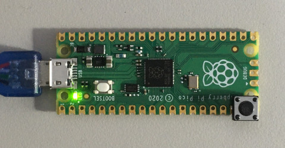
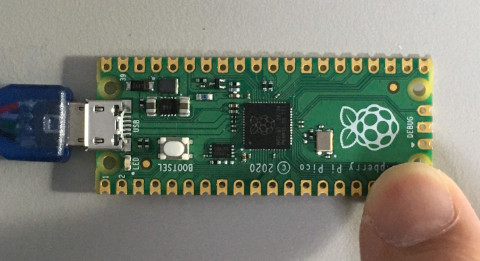

參考資訊：
https://www.digikey.com/en/maker/projects/raspberry-pi-pico-and-rp2040-cc-part-1-blink-and-vs-code/7102fb8bca95452e9df6150f39ae8422
main.c
#include <stdio.h>
#include "pico/stdlib.h"
#define BTN 15
#define LED 25
void main(void)
{
gpio_init(LED);
gpio_init(BTN);
gpio_set_dir(BTN, GPIO_IN);
gpio_set_dir(LED, GPIO_OUT);
gpio_pull_up(BTN);
while (1) {
gpio_put(LED, gpio_get(BTN));
}
}
完成

